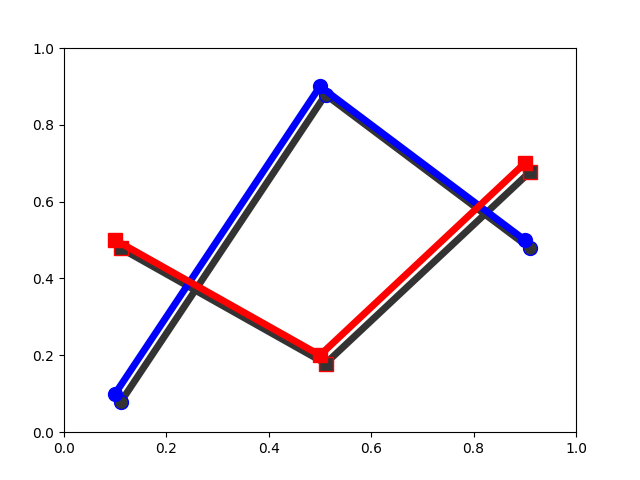

Note
Go to the end to download the full example code
SVG Filter Line#
Demonstrate SVG filtering effects which might be used with Matplotlib.
Note that the filtering effects are only effective if your SVG renderer support it.
Saving 'svg_filter_line.svg'
import io
import xml.etree.ElementTree as ET
import matplotlib.pyplot as plt
import matplotlib.transforms as mtransforms
fig1 = plt.figure()
ax = fig1.add_axes([0.1, 0.1, 0.8, 0.8])
# draw lines
l1, = ax.plot([0.1, 0.5, 0.9], [0.1, 0.9, 0.5], "bo-",
mec="b", lw=5, ms=10, label="Line 1")
l2, = ax.plot([0.1, 0.5, 0.9], [0.5, 0.2, 0.7], "rs-",
mec="r", lw=5, ms=10, label="Line 2")
for l in [l1, l2]:
# draw shadows with same lines with slight offset and gray colors.
xx = l.get_xdata()
yy = l.get_ydata()
shadow, = ax.plot(xx, yy)
shadow.update_from(l)
# adjust color
shadow.set_color("0.2")
# adjust zorder of the shadow lines so that it is drawn below the
# original lines
shadow.set_zorder(l.get_zorder() - 0.5)
# offset transform
transform = mtransforms.offset_copy(l.get_transform(), fig1,
x=4.0, y=-6.0, units='points')
shadow.set_transform(transform)
# set the id for a later use
shadow.set_gid(l.get_label() + "_shadow")
ax.set_xlim(0., 1.)
ax.set_ylim(0., 1.)
# save the figure as a bytes string in the svg format.
f = io.BytesIO()
plt.savefig(f, format="svg")
# filter definition for a gaussian blur
filter_def = """
<defs xmlns='http://www.w3.org/2000/svg'
xmlns:xlink='http://www.w3.org/1999/xlink'>
<filter id='dropshadow' height='1.2' width='1.2'>
<feGaussianBlur result='blur' stdDeviation='3'/>
</filter>
</defs>
"""
# read in the saved svg
tree, xmlid = ET.XMLID(f.getvalue())
# insert the filter definition in the svg dom tree.
tree.insert(0, ET.XML(filter_def))
for l in [l1, l2]:
# pick up the svg element with given id
shadow = xmlid[l.get_label() + "_shadow"]
# apply shadow filter
shadow.set("filter", 'url(#dropshadow)')
fn = "svg_filter_line.svg"
print(f"Saving '{fn}'")
ET.ElementTree(tree).write(fn)